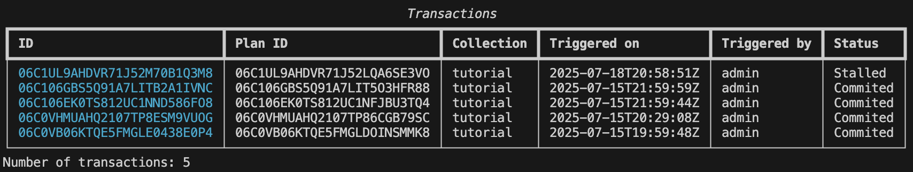
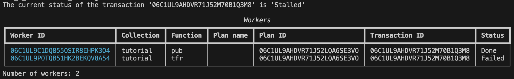
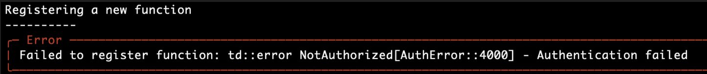
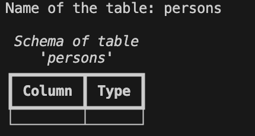
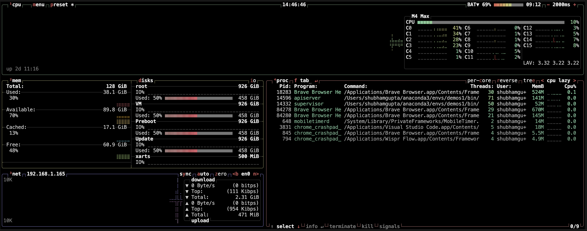
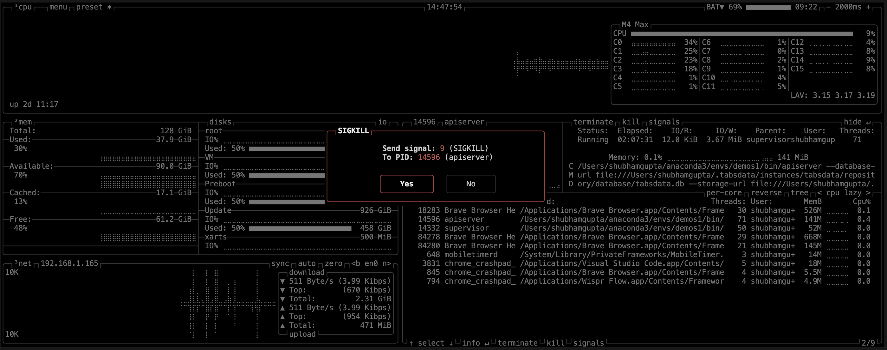

Troubleshooting
The Execution of a Function Failed
After triggering a function, the td exe list-trx reports the
transaction as failed.
For example:
{kind=link}

If a transaction is in Stalled status, all functions that did not
complete successfully yet are either in Failed status or on
Hold. Any other execution depending on the failed transaction will also be on Scheduled status.
If this is the case, you need to:
Check the logs for issues.
Cancel the failed transaction.
Fix the issue in the code.
Update the function body in the Tabsdata server.
Re-trigger the function that started the cancelled transaction.
Check the logs for issues
Find the Workers of the Failed Transaction that Already Executed
To know the exact reason for fialure, you will need to access the constituent workers of a transaction.
To find the workers of the stalled transaction, use the td exe list-worker command with one of the following 3
options:
--trx <TRX_ID>to list workers of a specific transaction.--plan <PLAN_ID>to list workers of a specific execution plan.--fn <FN_ID>to list workers of a specific function.
{kind=link}

Fetch the logs of a Worker
To fetch the logs of a worker, use the
td exe logs --worker <WORKER_ID> command.
$ td exe logs --worker 06ACHMC505VC10HMF7NI1D9RUG
Logs from worker '06ACHMC505VC10HMF7NI1D9RUG':
********************
/Users/foo/.tabsdata/instances/tabsdata/workspace/work/proc/ephemeral/function/work/cast/06ACHMC505VC10HMF7NI1D9RUG_1/work/log/err.log
-----------------------------------------------
Traceback (most recent call last):
File "<frozen runpy>", line 198, in _run_module_as_main
File "<frozen runpy>", line 88, in _run_code
File "/Users/foo/.tabsdata/environments/726fbc09de/lib/python3.12/site-packages/tabsserver/function_execution/execute_function_from_bundle_path.py", line 106, in <module>
raise e
File "/Users/foo/.tabsdata/environments/726fbc09de/lib/python3.12/site-packages/tabsserver/function_execution/execute_function_from_bundle_path.py", line 96, in <module>
execute_bundled_function(
File "/Users/foo/.tabsdata/environments/726fbc09de/lib/python3.12/site-packages/tabsserver/function_execution/execute_function_from_bundle_path.py", line 35, in execute_bundled_function
results = execution_utils.execute_function_from_config(
^^^^^^^^^^^^^^^^^^^^^^^^^^^^^^^^^^^^^^^^^^^^^
File "/Users/foo/.tabsdata/environments/726fbc09de/lib/python3.12/site-packages/tabsserver/function_execution/execution_utils.py", line 87, in execute_function_from_config
return execute_function_with_config(config, met, working_dir, execution_context)
^^^^^^^^^^^^^^^^^^^^^^^^^^^^^^^^^^^^^^^^^^^^^^^^^^^^^^^^^^^^^^^^^^^^^^^^^
File "/Users/foo/.tabsdata/environments/726fbc09de/lib/python3.12/site-packages/tabsserver/function_execution/execution_utils.py", line 131, in execute_function_with_config
result = met(*parameters)
^^^^^^^^^^^^^^^^
File "/Users/foo/src/tabsdata/github/tabsdata-ex/publisher.py", line 10, in pub
assert False
^^^^^
AssertionError
===============================================
/Users/foo/.tabsdata/instances/tabsdata/workspace/work/proc/ephemeral/function/work/cast/06ACHMC505VC10HMF7NI1D9RUG_1/work/log/fn.log
-----------------------------------------------
...
Depending on the type of error, you may need to retry the transaction or cancel it.
If logs show up empty
In the rare case that the logs show up empty, follow the path below to find the logs in the server folder. Remember to replace the 06ACHMC505VC10HMF7NI1D9RUG with the id of your run that you want to check the logs for.
/Users/foo/.tabsdata/instances/tabsdata/workspace/work/proc/ephemeral/function/work/cast/06ACHMC505VC10HMF7NI1D9RUG_1/work/log/fn.log
Cancel the Transaction
To cancel the transaction use the td exe cancel --trx <TRX_ID>
command. It will cancel all workers of the transaction, including the
ones that finished successfully. The cancel also applies to all the
dependent transactions.
For example:
$ td exe cancel --trx 06ACE0ME7TV95DKETOAMVB88DK
Canceling transaction with ID '06ACHMC4H1QJ3E7VS99VSRES4K'
----------
Execution plan canceled successfully
Recover the Transaction
To recover the transaction use the td exe recover --trx <TRX_ID>
command. It will retry all workers that failed and reschedule all
workers that were on hold. The recover also applies to all the dependent
transactions.
For example:
$ td exe recover --trx 06ACE0ME7TV95DKETOAMVB88DK
Recovering transaction with ID '06ACHMC4H1QJ3E7VS99VSRES4K'
----------
Execution plan recovered successfully
Update the function body in the Tabsdata server
The function changes you made are still in your local and need to be moved to the Tabsdata server. To do that, use the below command and modify as needed.
$ td fn update --coll examples --name <FUNCTION>
--path <PYTHON_FILE>::<PYTHON_FUNCTION>
--description <DESCRIPTION> --local-pkg <LOCAL_PACKAGE_PATH>
--requirements <REQUIREMENTS_TXT_PATH>
Common Error Resolutions
Authentication Failed

If authentication is failing, try logging back in.
td login --server localhost --user <USERNAME> --role <ROLE> --password <PASSWORD>
Default:
td login --server localhost:2457 --username admin --role sys_admin --password tabsdata
Empty Table Schema/Sample

If the table value is empty, check if the path to the input file in the Python code is correct or not. If the path seems correct, you may also want to check the folder from which you are running the function registration CLI command. If you are using os.getcwd() in the python code, it is important to remember that this command retrieves the path of the folder from which the function is registered in the CLI.
{kind=link}
{kind=link}
Hard Reset
Remove Tabsdata instance
All the information related to Tabsdata server is stored in instances. By default instances are created in the root folder.
You can run the following command to delete the instance and start the process from scratch with tdserver start.
$ tdserver delete
Clean the Tabsdat related libraries from pip and uv cache:
$ tdserver clean
Note: You can also delete the server by finding the .tabsdata folder in your system and deleting it. This folder gets created in the root directory of your system by default.
Delete stray Servers
There may be also be a stray Tabsdata server (supervisor and/or apiserver) running in the background.
You can delete the servers using the methods below:
Searching through processes
$ ps -ef | grep tabsdata
$ kill <PID>
Using btop
You can use btop (Read more about the tool on btop github).
$ brew install btop
$ btop
Click on filter and type tabsdata.

Use your arrow keys to navigate to the apiserv.
Press k to kill the server.
